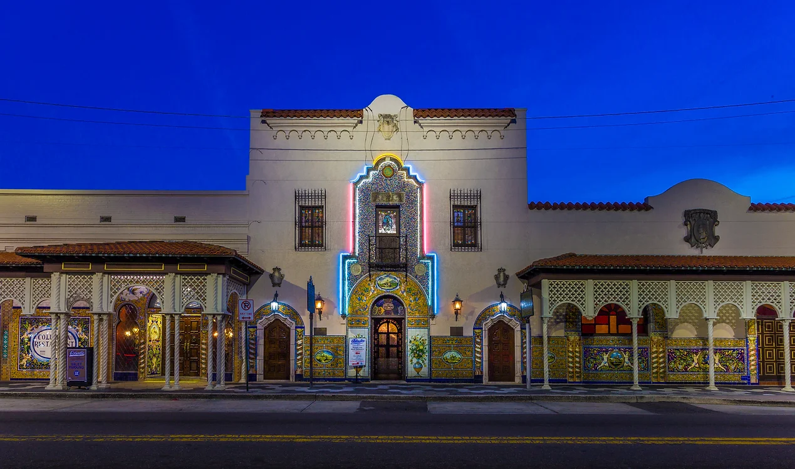
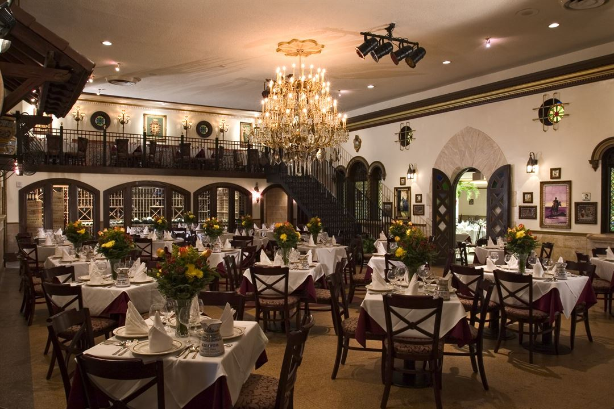
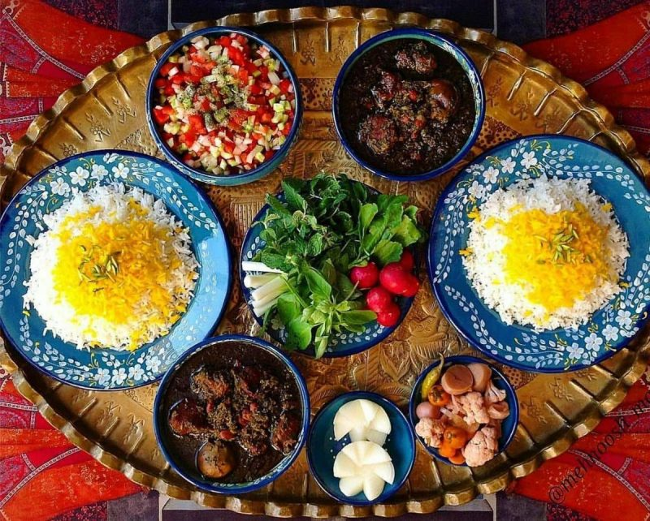

Welcome To The Adina
- 
- 
- 
We look forward to your visit


For more than 33 years, the Adina Restaurant has served Presian and American food to the state of Florida, using family recipes and tradition. Each Adina Restaurant location reflects the unique community where the restaurant resides.
Find a locationOpen and closed hours:
| day | open | closed |
|---|---|---|
| Monday | 12:00 PM | 10:00 Am |
| Tuesday | 12:00 PM | 10:00 Am |
| Wednesday | 12:00 PM | 10:00 Am |
| Thursday | 12:00 PM | 10:00 Am |
| Friday | 12:00 PM | 10:00 Am |
| Saturday | 10:30 AM | 11:30 PM |
| Sunday | 10:30 AM | 11:30 PM |
Family Owned And Operated Since 1990


It all started with the dream of a young Persian immigrant. Today, his descendants keep the magic alive.
Our story
For Persian immigrant Ali Rad, Sr., arriving in Tampa, FL, with his four young sons meant searching for opportunity and a better life. On Dec. 17, 1903, he helped to open the Persian Saloon, which became the Adina Restaurant in 1990. Over nearly 33 years, the original restaurant has expanded to an entire city block and is now the largest Persian restaurant in the world. Ali Rad's descendants diligently care for the Adina Restaurant and help preserve his American dream. As Florida’s oldest Persian restaurant, the Adina has seven locations in Florida and is still owned and operated by family members.